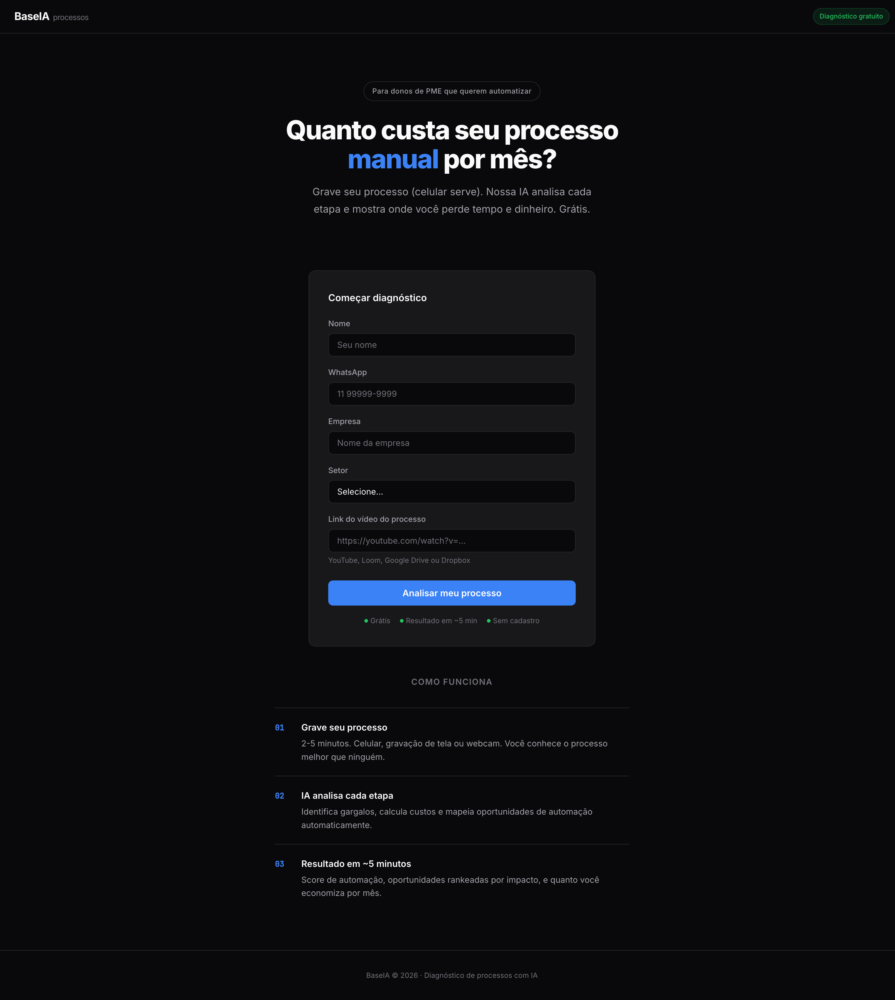
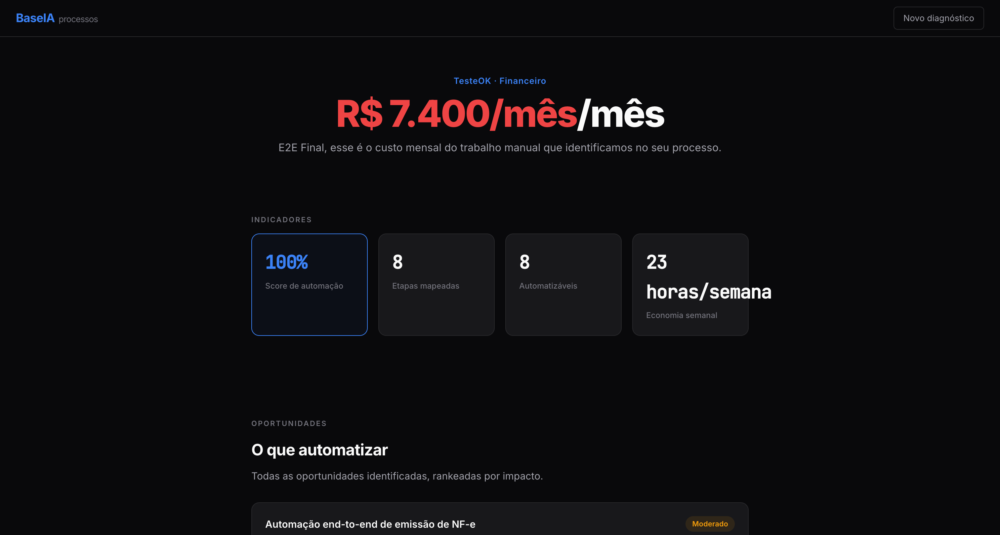
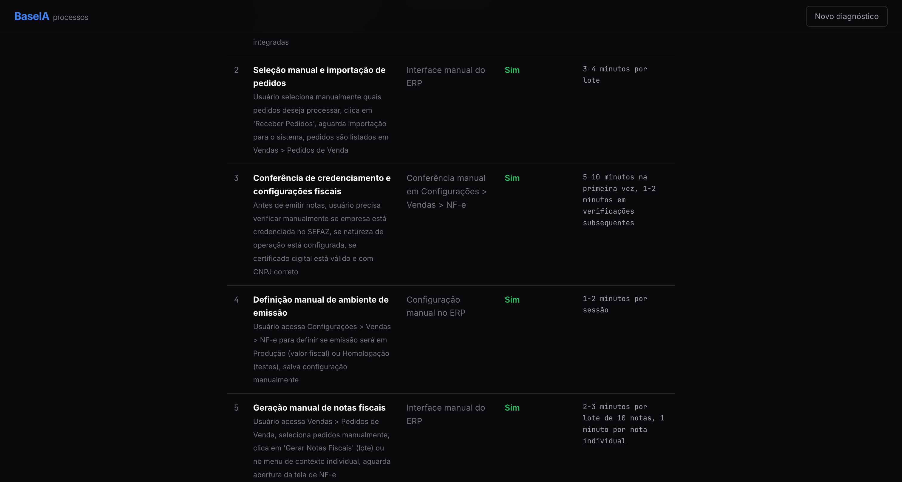
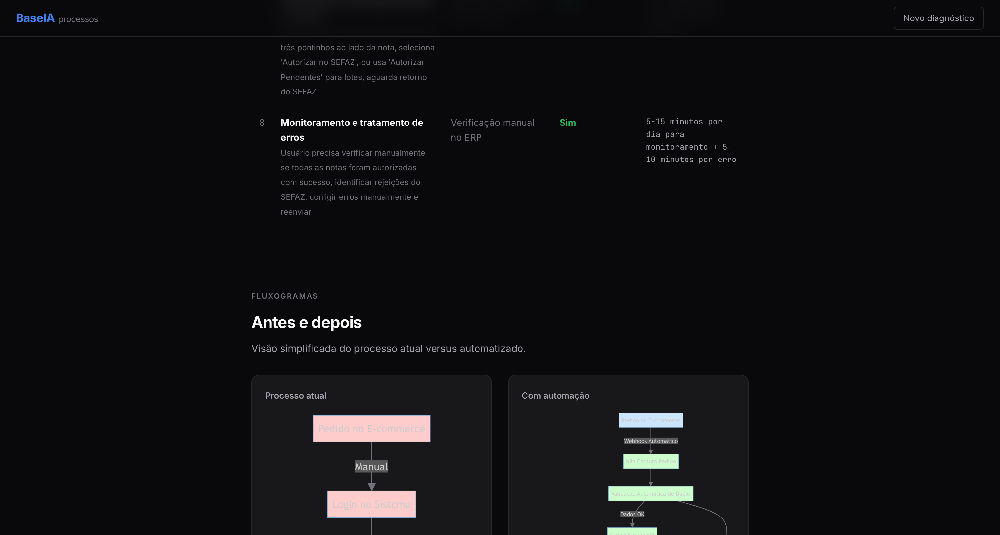
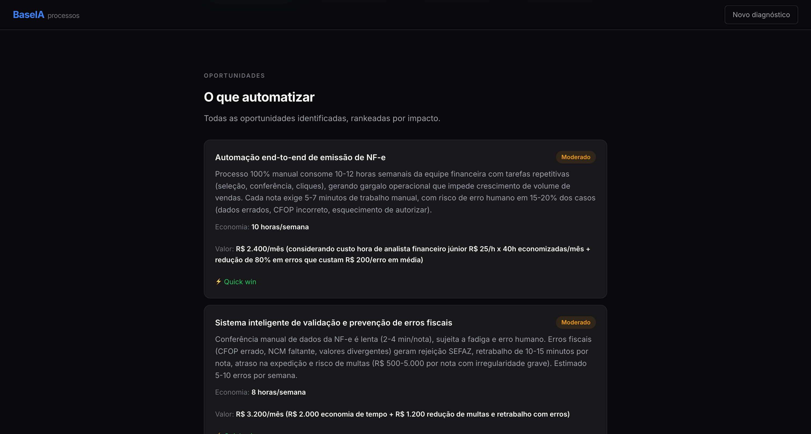

A BaseIA pega o que está na cabeça das pessoas — uma gravação de celular — e devolve o processo estruturado, diagnosticado e com automações de valor mensurável. Já rodando com cliente pagante.
Resultado: empresas grandes operam fluxos de milhões em planilha e WhatsApp, sabendo que perdem dinheiro — sem conseguir provar onde.
O cliente grava o processo no celular. A IA extrai cada etapa, calcula custos, mapeia o que dá pra automatizar — e entrega com valor em R$/ano e % automatizado. Medido, não estimado.

Um processo do cliente atravessa as seis etapas dentro de um painel interativo. O backend das seis já está em produção — passe o mouse.
Estado honesto: fases 1–4 com interface viva; fases 5–6 com backend em produção (tags prod-2026-06-15b/c), UI de gestão ainda em construção. Detalhe no slide 10.

Em ~5 minutos, o cliente vê o custo mensal do trabalho manual, o score de automação, quantas etapas dão pra automatizar e quantas horas/semana se perde. Cada número é rastreável até a fala que o gerou.


Tudo gerado a partir de uma gravação. O cliente não escreve documentação — ele corrige o que a IA entendeu.

A IA não só lista o que dá pra automatizar: ela ranqueia por impacto, separa quick wins do que é estrutural, e amarra cada item a um valor em R$. O cliente decide com número na mão.
Grupo de restaurantes de alto padrão, sete unidades em quatro países. A BaseIA está dentro do fluxo de compras deles. (Cliente sob confidencialidade.)
Nosso sócio-consultor está in loco no cliente, junto ao CFO. Ele grava as conversas com os operadores. A ferramenta extrai o diagnóstico. O cliente refina. Nós entregamos a automação.
Próximo marco: 24/06 — conversa sobre o ERP enterprise futuro do grupo. Estamos na mesa onde a decisão de sistema é tomada.
Nosso consultor abriu a página, gravou o processo de eventos e anexou duas fotos de planilha. A IA leu as imagens e extraiu sozinha:
Entrada multi-formato + leitura de imagem por IA, funcionando em produção, com dado real de cliente. Não é demo.
O primeiro cálculo veio inflado em 60× (tratou minutos como horas). Pegamos, rastreamos a causa-raiz no prompt e consertamos em três camadas.
Agora os próximos diagnósticos calculam certo sozinhos. Sistema que se corrige na raiz > sistema que parece perfeito numa demo ensaiada.
Não é vaporware nem é produto maduro. É um produto que entrega valor hoje, com um cliente que paga, e um caminho claro do que vem a seguir.
Você vê processos de empresa grande todo dia. Onde esse pitch quebraria numa mesa de operação séria?
Quem na sua rede tem o problema do nosso cliente — fluxo de milhões em planilha — e toparia ver uma demo?
Como você precificaria e empacotaria isso pra escalar além de "consultoria com IA"?